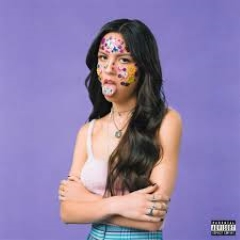
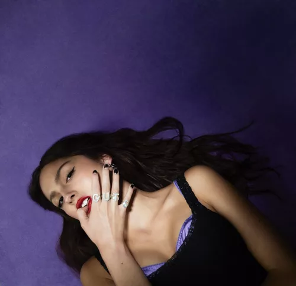

SOUR (2022)
 Sour (estilizado en mayúsculas; en español: Agrio) es el primer álbum de estudio de la cantautora estadounidense Olivia Rodrigo, publicado el 21 de mayo de 2021 a través de Geffen Records. Rodrigo declaró que el álbum explora los peligros y descubrimientos como joven de diecisiete años y el título hace referencia a las incómodas emociones «agrias» que experimentan los jóvenes pero de las que a menudo se avergüenzan, como la ira, los celos y el corazón roto. El estilo musical del álbum se inspira en los géneros y cantautores favoritos de Rodrigo.
Escrito por Rodrigo, junto a otros pocos colaboradores y producido por Dan Nigro, Sour es principalmente pop alternativo que yuxtapone canciones optimistas de rock alternativo y pop punk junto a baladas lo-fi, impulsadas por guitarras, pianos y sintetizadores. Su temática aborda temas centrados en la adolescencia, el romance fallido y el dolor del corazón contados desde las distintas perspectivas de Rodrigo. El álbum recibió aclamación universal de los críticos musicales, que lo consideraron un sólido debut y alabaron la versatilidad musical de la cantante, su honesto lirismo y su atractivo para la generación Z.
Tracklist:
- brutal
- traitor
- drivers license
- 1 step forward, 3 step back
- deja vu
- good 4 u
- enough for you
- happier
- jealousy, jealousy
- favorite crime
- hope ur ok
Escuchar en Spotify:
GUTS (2023)
 Guts (estilizado en mayúsculas) es el segundo álbum de estudio de la cantante estadounidense Olivia Rodrigo. Fue lanzado el 8 de septiembre de 2023, a través de Geffen Records. El álbum fue escrito por Rodrigo y el productor Dan Nigro, con colaboraciones en autoría de Julia Michaels y Amy Allen. Rodrigo concibió Guts como un intento para reflejar el proceso de madurez que ella experimentó al finalizar sus años de adolescencia.
Un proyecto pop sónicamente diverso, Guts destaca por ser un álbum de rock, a diferencia de su predecesor "Sour" (2021), que destacaba más por ser un álbum de baladas, utilizando una variación melódica de guitarra y batería proveniente de estilos de pop rock y alternativo de antaño. La mezcla de temas beligerantes con guitarra y baladas más sutiles genera un fondo sobre las narrativas de Rodrigo, centrándose en las aflicciones sucedidas durante la transición de la adolescencia a la adultez.
- all-american bitch
- bad idea right?
- vampire
- lacy
- ballad of a homeschooled girl
- making the bed
- logical
- get him back!
- love is embarrasing
- the grudge
- pretty isn't pretty
- teenage dream
Escuchar en Spotify:
GUTS (spilled)


GUTS (spilled), la edición deluxe del segundo álbum de Olivia Rodrigo, que encabezó las listas de éxitos, ya está disponible. Cinco canciones adicionales aparecen en el álbum deluxe, incluido su nuevo sencillo “obsessed”, que lo ha cantado todas las noches en el GUTS World Tour.
Rodrigo escribió “obsessed” con Daniel Nigro, quien produjo GUTS y su álbum debut SOUR, y Annie Clark (que graba como St. Vincent). La canción apareció originalmente como una pista oculta en el vinilo rojo exclusivo de D2C, el negro estándar y variantes adicionales del vinilo GUTS. El álbum Deluxe también incluye “girl I’ve ever been”, “scared of my guitar” y “stranger”, pistas ocultas de otras variantes de vinilo en color de GUTS. Una nueva canción, “so american”, grabada tras el lanzamiento de GUTS, también aparece en el deluxe.
Tracklist:
- all-american bitch
- bad idea right?
- vampire
- lacy
- ballad of a homeschooled girl
- making the bed
- logical
- get him back!
- love is embarrasing
- the grudge
- pretty isn't pretty
- teenage dream
- obsessed
- girl i've always been
- the grudge
- pretty isn't pretty
- teenage dream